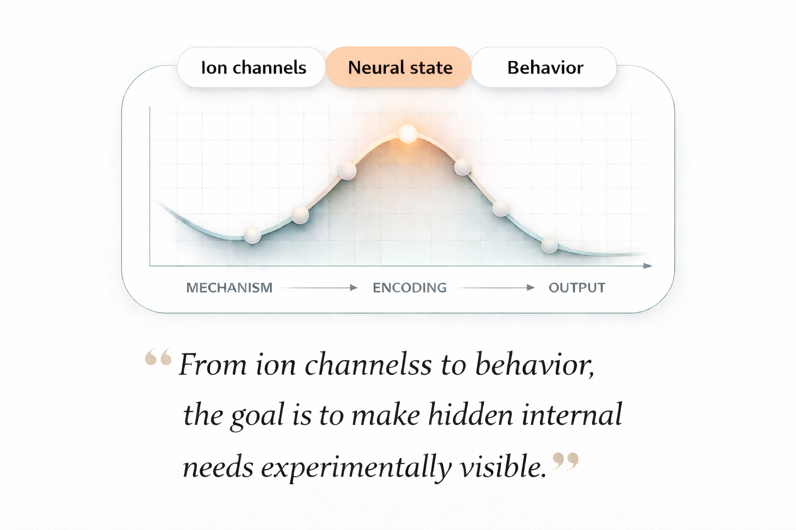

01
编码营养需求
我们研究蛋白质饥饿神经元如何表征摄入目标值，以及细胞兴奋性如何储存内部营养需求的信息。
研究
我们研究神经环路、膜兴奋性和体内代谢信号如何协同维持蛋白质内稳态。 以果蝇为可操作的系统模型，我们将单细胞生理与摄食行为、 营养特异性动机以及疾病相关的代谢失衡联系起来。
科学动机
动物会维持营养、水分和睡眠等基本需求的内部目标值。我们的研究关注这些目标值如何在生物学层面被表征， 如何随生理状态而调整，以及在食欲和代谢失去耦合的疾病状态中如何被破坏。
研究主题
01
我们研究蛋白质饥饿神经元如何表征摄入目标值，以及细胞兴奋性如何储存内部营养需求的信息。
02
我们解析神经调质和 GPCR 信号通路如何调节膜电位、重塑营养特异性动机，并重新校准行为输出。
03
我们将内稳态目标值生物学拓展到肥胖、癌症相关厌食和恶病质，理解外周病理如何扰乱脑-体通讯。
代表性发现
吴广彦此前的研究表明，蛋白质饥饿神经元能够通过静息膜电位编码摄入目标值， 将一个内稳态目标与可追踪的电生理参数连接起来。这一发现为在细胞和环路层面研究动机如何被编程提供了更广阔的框架。
